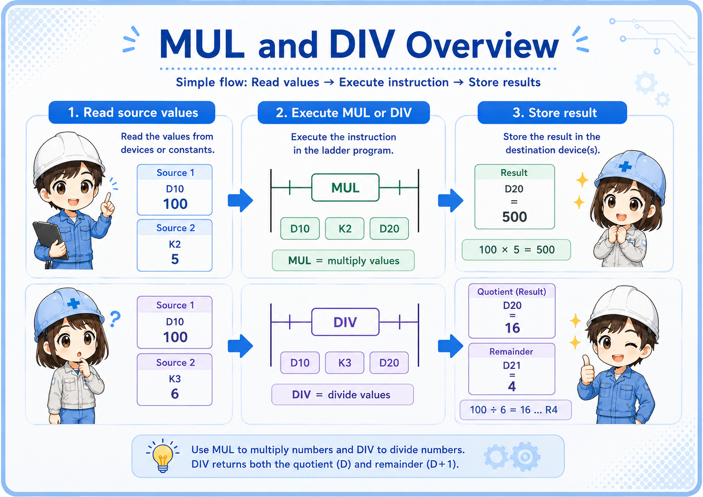
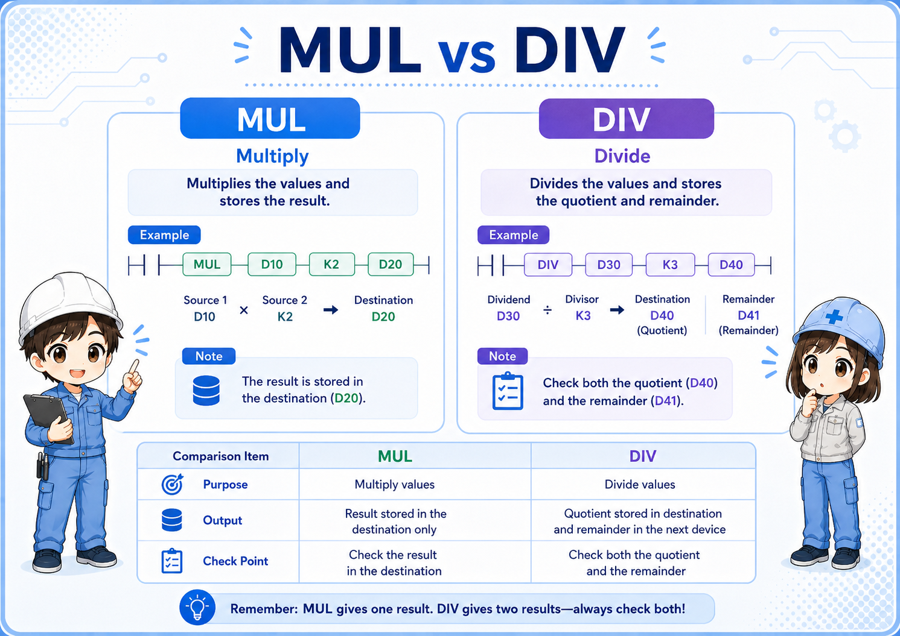
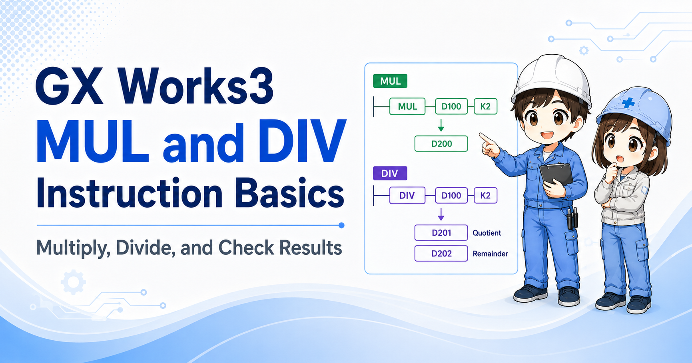

1. What are MUL and DIV instructions?
Think of MUL and DIV as “calculate, then store the result in a defined device area.”
In GX Works3 and MELSEC-style ladder programming, MUL and DIV are arithmetic instructions. MUL is used for multiplication, and DIV is used for division.
The important beginner point is this: do not stop at the formula. You also need to check where the result is stored and whether another instruction overwrites that destination later.


With MUL and DIV, the calculation itself is only half of the story. The result storage area is just as important.

So I should check where the result, quotient, or remainder is written before judging the program.
2. Quick conclusion: watch the result area
MUL and DIV are more storage-sensitive than they may look at first.
For field reading, understand MUL and DIV as instructions that calculate values and write the result to a destination area. MUL may involve a wider result area, and DIV may separate quotient and remainder depending on the instruction format and PLC series.
Execution condition
The rung condition allows the instruction to execute.
Source values
The values to multiply or divide are read.
Result area
The result, quotient, or remainder is stored.
Check official manuals for exact details
Exact result storage, word usage, flags, and device rules can depend on CPU series and instruction format. Use this article as a beginner guide, and check the official Mitsubishi Electric manual or GX Works3 help for actual design work.
3. How to read a MUL instruction
MUL is multiplication, but the result storage area needs attention.
A beginner-friendly example is MUL D10 K2 D20. You can read it as “multiply the value in D10 by 2, then store the result starting at D20.”
| Part | Beginner reading | Field check |
|---|---|---|
| D10 | One source value. | Check the value before execution. |
| K2 | A constant multiplier. | Confirm the intended multiplier. |
| D20 | Destination area for the result. | Check the result area, not only one visible value. |
Field reading point
When the result looks wrong, check both the source values and the destination area. Also search for later rungs that may overwrite the same device area.
4. How to read a DIV instruction
DIV is division, but quotient and remainder are easy to overlook.
A beginner-friendly example is DIV D30 K3 D40. You can read it as “divide the value in D30 by 3, then store the division result in the destination area.”
In practical troubleshooting, do not think of DIV as only one answer. Depending on the instruction format and PLC series, you may need to check both quotient and remainder.
Do not forget the remainder
If the division is not exact, the remainder may explain why the program behaves differently from the operator's expectation.
5. Source values and destination area
Most MUL/DIV mistakes happen because the storage area is not checked carefully.
MUL and DIV are not just arithmetic symbols. They are ladder instructions that read source values and write output data to a destination area. If the destination is reused elsewhere, the result may change again after the instruction executes.

Source values
Are the values being multiplied or divided actually correct?
Destination area
Where is the result written after execution?
Quotient / remainder
For DIV, check whether the program uses only quotient or also remainder.
Overwritten later?
Another instruction may write to the same result area.
6. Common field use cases
MUL and DIV often appear around scaling, conversion, and numeric adjustment.
- Multiplying a raw value by a scale factor.
- Converting counts, length, quantity, or ratio values.
- Dividing a value into a quotient and remainder for grouping or indexing.
- Preparing a calculated value before comparison, display, or HMI indication.
- Adjusting internal values before they are used by other ladder logic.
Related instruction flow
MOV copies a value, ADD/SUB changes a value, and MUL/DIV scales or splits a value. Reading those roles separately makes GX Works3 ladder programs easier to follow.
7. Watch out for scan-by-scan execution
If the execution condition stays true, the result area may be updated repeatedly.
Like other ladder instructions, MUL and DIV are evaluated as part of the PLC scan. If the condition remains true, the instruction may execute repeatedly according to the program scan.
This does not always cause a visible problem, but it matters when the source values are also changing, or when another rung writes to the same destination area. First check execution condition, source values, and overwrite.
Common failure pattern
The calculation is correct for one scan, but the result looks wrong because another instruction updates the source or overwrites the destination later.
8. What about MULP, DIVP, and advanced variants?
Pulse execution and advanced arithmetic should be checked in the official manual before use.
In some projects, pulse execution forms or advanced arithmetic variants may be used to control when multiplication or division occurs. For a beginner article, it is safer to focus on the basic reading method first: condition, source values, destination area, and result usage.
Do not guess advanced details from memory. Check the official manual or GX Works3 help for the target PLC series before changing instruction variants, word size, or signed/unsigned behavior.
Beginner priority
Before studying every variant, make sure you can read where the basic MUL/DIV instruction gets values from and where it writes the result.
9. Field check points when MUL/DIV does not work
Check the condition, sources, destination area, quotient/remainder, and overwriting in order.
- Confirm that the execution condition is actually true.
- Check the source values before the instruction executes.
- For MUL, check the full result area required by the instruction format.
- For DIV, check both quotient and remainder if the program uses them.
- Search for other instructions that write to the same destination area.
- Check whether the instruction is executing every scan.
- Review the official manual or GX Works3 help before changing instruction variants.
10. GX Works3 monitoring points
Monitor the values around the instruction, not only the final result.
When monitoring a MUL or DIV instruction in GX Works3, watch the execution condition, both source values, and the result area at the same time. If the result changes and then changes again, search for another rung that writes to the same device area.
Practical monitoring set
Watch execution condition, source values, destination area, and later overwrites together. For division logic, also check whether the program uses remainder data.
11. Common beginner mistakes
The most common problems are storage, timing, and assumptions about the result.
- Looking at only one device: The result area may require more careful checking than a single visible value.
- Ignoring the remainder: DIV-related logic may depend on whether a remainder exists.
- Mixing up source and destination: The calculation source and result storage are different roles.
- Missing overwrites: Another rung may write a different value after the calculation.
- Jumping into advanced variants too early: Confirm the basic flow before studying word-size variants or flags.
- Skipping official references: Always check official manuals for target CPU and instruction details.
12. Summary
MUL and DIV are basic instructions for multiplying and dividing values in GX Works3 ladder programs. For beginners, the safest reading method is to follow the execution condition, source values, operation, destination area, and overwrite as one chain.
If you understand this flow, MUL/DIV becomes easier to connect with MOV, ADD/SUB, comparison instructions, counters, HMI displays, and field troubleshooting.

Related articles
These articles connect naturally with MUL and DIV instruction basics.